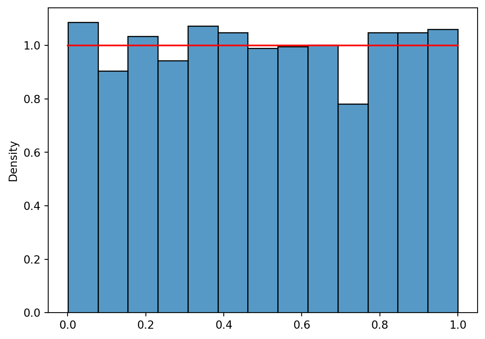
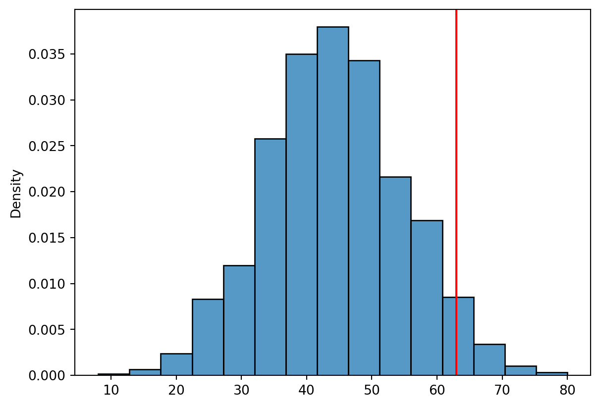
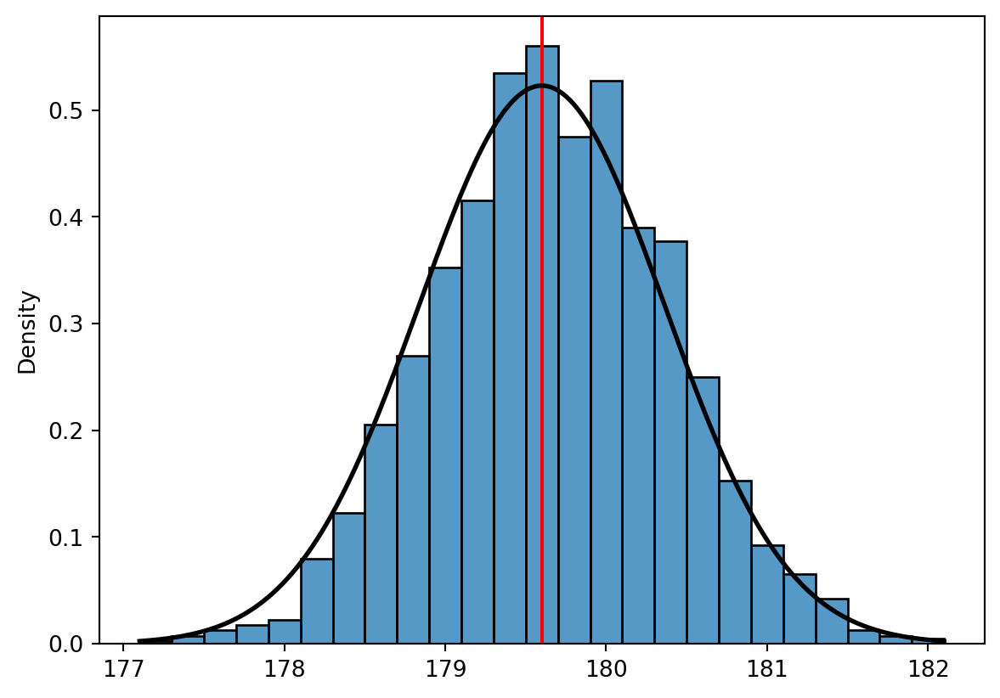

Here we will present some useful python commands relevant for what we want to do in Module 3.
Generate random numbers from a distribution
from scipy import statsimport numpy as npimport matplotlib.pyplot as pltimport seaborn as sns# Generate 2000 random numbers from a uniform distribution: x = stats.uniform.rvs(size =2000)# Plot histogram of the simulated data: sns.histplot(x, stat ="density")plt.show()# Add uniform density function to the plot:sns.histplot(x, stat ="density")xvalues = np.linspace(0, 1, 2000)pdf = stats.uniform.pdf(xvalues)plt.plot(xvalues, pdf, color ="red")plt.show()

It is often a good idea to set a seed when generating random numbers. This has the benefit that every time you rerun your code, the same random random are generated. If you want a new draw from the distribution, you change the seed and you will get a new set of numbers. Test this out your self using the code below:
Here we will implement the Yatzi bonus example used in the video here. First, we need a way to simulate the roll of 5 dice and count the number of ones, twos, etc. We could simulate the actual dice, sampling numbers from 1-6 with equal probability. This can be done by the following code:
import numpy as npnp.random.seed(123)# roll 5 dice:x1 = np.random.randint(1, 7, size =5)print(x1)
[6 3 5 3 2]
We could then count the number of 1 ones and roll the remaining dice.
# Count number of ones:count_ones1 = np.sum(x1 ==1) # Roll remaining dice:x2 = np.random.randint(1, 7, size =5-count_ones1)print(x2) # Print the outcome# Count ones in second roll: count_ones2 = np.sum(x2 ==1) # Roll the remaining dice: x3 = np.random.randint(1, 7, size =5-count_ones1-count_ones2)print(x3) # Print the outcomecount_ones3 = np.sum(x3 ==1) # count the number of ones# Calculate the total score: score = count_ones1+count_ones2+count_ones3print(score)
[4 3 4 2 2]
[1 2 2 1 1]
3
This is a bit cumbersome, but it illustrates how one can simulate dice rolls. Since the actual number is not so important for the game, we can rather (as is done in the video), simulate directly the number of ones in the dice roll by simulating from a binomial distribution with sucess probability \(p=1/6\) and \(n=5\) in the first roll, \(n-X_1\) in the second and \(n-X_1-X_2\) in the third.
np.random.seed(321)from scipy.stats import binomx1 = binom.rvs(n=5, p=1/6, size =1) # First rollx2 = binom.rvs(n=5-x1, p=1/6, size =1) # Second roll x3 = binom.rvs(n=5-x1-x2, p=1/6, size =1) # Second roll print("After first roll:", x1)print("After second roll:", x1+x2)print("Score of the round:", x1+x2+x3)
After first roll: [2]
After second roll: [2]
Score of the round: [4]
This was one round of Yatzi, where the score is just the number of equal dice rolls or you could think of it as the round where we collect ones. Let’s make this a function. We also add the argument number, which is the number we are collect in the specific round.
from scipy.stats import binomdef play_round(number, n=5, p=1/6): x1 = binom.rvs(n=n, p=p, size=1)[0] # First roll x2 = binom.rvs(n=n - x1, p=p, size=1)[0] # Second roll x3 = binom.rvs(n=n - x1 - x2, p=p, size=1)[0] # Third rollreturn (x1 + x2 + x3)*number# Play round collecting ones:print(play_round(1))
2
and use it to play a full game:
def play_game(): total_score =0for i inrange(1, 7): total_score += play_round(i) # add the next round to total scorereturn total_scoreprint("Game score:", play_game())# No bonus this round.
Game score: 34
We can now run many-many games. That is, we are ready to do a Monte Carlo simulation of the game.
# Play 10,000 games: scores = np.array([play_game() for _ inrange(10_000)])
Having played 10,000 games, we can estimate the expected score:
m = scores.mean() print("Expected score: ", m)
Expected score: 44.237
The probability of achieving the bonus requirement (total score \(\le 63\)):
sns.histplot(scores, bins =15, stat ="density")plt.axvline(63, color ="red")plt.show()

Bootstrap
We consider the same height measurements of ten 20-year old male athletes as used in the video on the bootstrap. We can first confirm that the sample mean is 179.6 and the standard deviation is 2.41. This the standard error of the sample mean estimator being \(\approx \sigma/\sqrt{n}= 2.41/\sqrt{10}=0.76\).
As you can see from the output, I have sampled 3 heights from the vector. Here I have sampled without replacement, so I know that these are three different observations selected at random. I set a seed to get the same three each time I run the code.
Now, say we want to use the bootstrap method to find the sampling distribution of the sample mean estimator from just this one sample of ten observations. We then pretend that the data we have (the ten observations) is our population, and we repeatedly sample from the vector with replacement. For each new sample we calculate the average value and the vector containing many such mean value (boot_means) is treated as observations of the sample mean estimators for multiple samples. We can summarize the sampling distribution by e.g. considering the standard deviation of the boot_means. This should be close to the \(\sigma/\sqrt{n}\) value that we found above, due to the central limit theorem and the fact that we are considering a mean estimator here.
from scipy.stats import norm# Histogram of sampling distributionsns.histplot(boot_means, stat ="density", binwidth =.2)plt.axvline(x=vector.mean(), color ="red")# Add normal density curve: x = np.linspace(min(boot_means), max(boot_means), 500)mu = np.mean(vector)sigma = np.std(vector, ddof=1)/np.sqrt(10)plt.plot(x, norm.pdf(x, mu, sigma), color="black", linewidth=2)plt.show()

Note that the black curve is based on the normal approximation (central limit theorem). Quite a good fit!
Now, let us consider a slightly larger dataset. This example is from the python supplement to the textbook. Here we imagine that the full NHANES dataset is our population. We pull out a sample of size 100 as our “original sample”. We then bootstrap the sampling distribution of the mean height. Here, we are not interested in the mean or the standard deviation, but the 2.5 and 97.5 percentiles. This gives the central interval containing 95% of the population.
from nhanes.load import load_NHANES_dataimport pandas as pdnhanes_data = load_NHANES_data()adult_nhanes_data = nhanes_data.query('AgeInYearsAtScreening > 17')adult_nhanes_data = adult_nhanes_data.dropna(subset=['StandingHeightCm']).rename(columns={'StandingHeightCm': 'Height'})num_runs =5000sample_size =100# Take a sample for which we will perform the bootstrapnhanes_sample = adult_nhanes_data.sample(sample_size)# Perform the resamplingbootstrap_df = pd.DataFrame({'mean': np.zeros(num_runs)})for sampling_run inrange(num_runs): bootstrap_sample = nhanes_sample.sample(sample_size, replace=True) bootstrap_df.loc[sampling_run, 'mean'] = bootstrap_sample['Height'].mean()# Compute the 2.5% and 97.5% percentiles of the distributionbootstrap_ci = np.percentile(bootstrap_df['mean'], [2.5, 97.5])print("Bootstrap 95% CI:", bootstrap_ci)# Normal approximation:sample_mean = nhanes_sample["Height"].mean()sample_std = nhanes_sample["Height"].std()/np.sqrt(sample_size)CLT_ci = norm.ppf([0.025,0.975], sample_mean, sample_std)print("Normal approximation 95% CI:", CLT_ci)